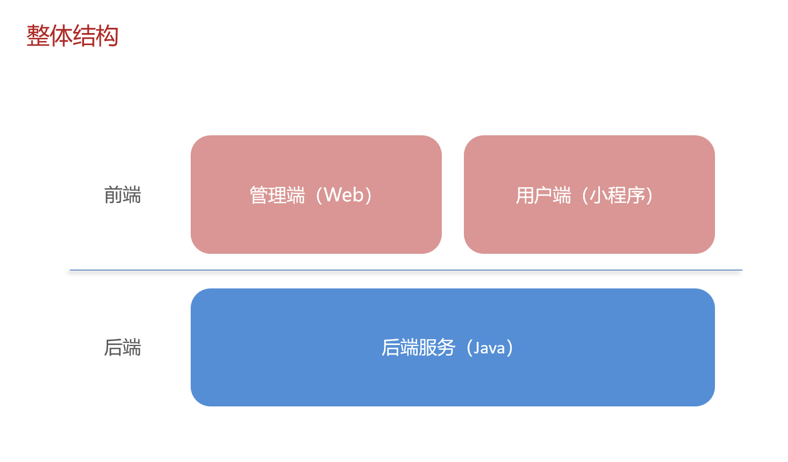
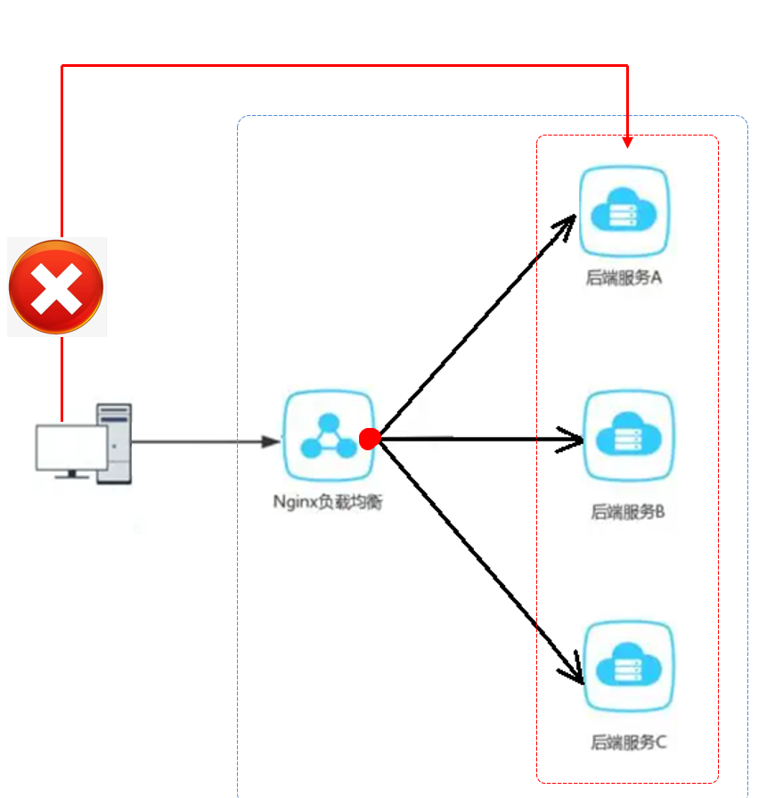
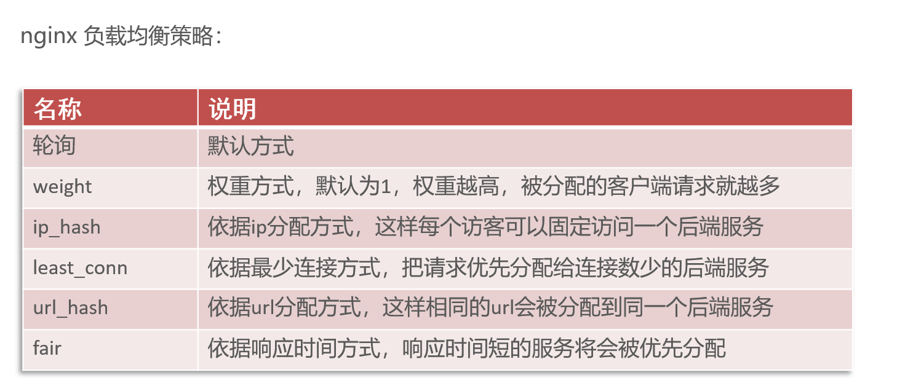
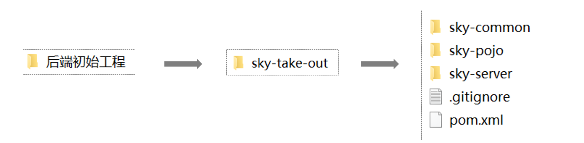
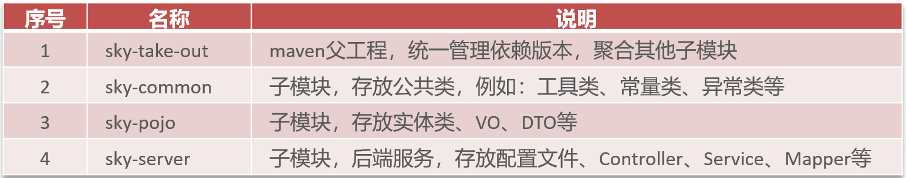
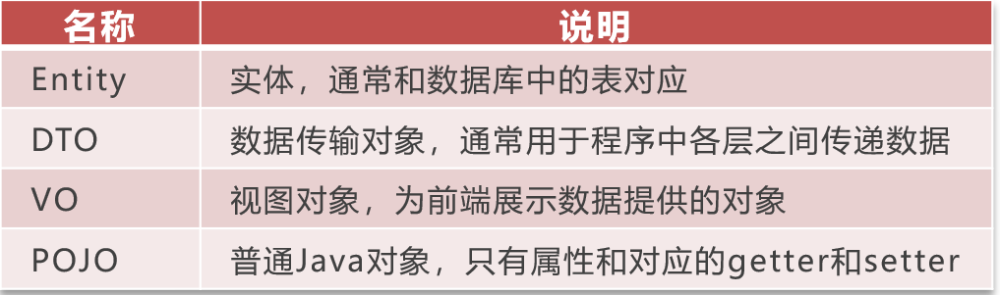
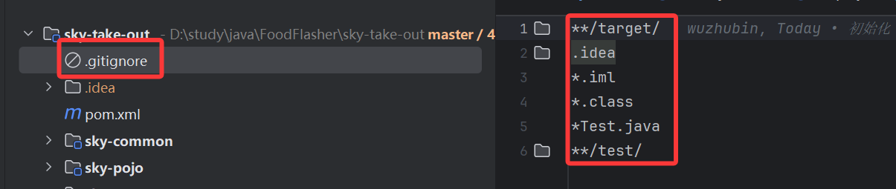
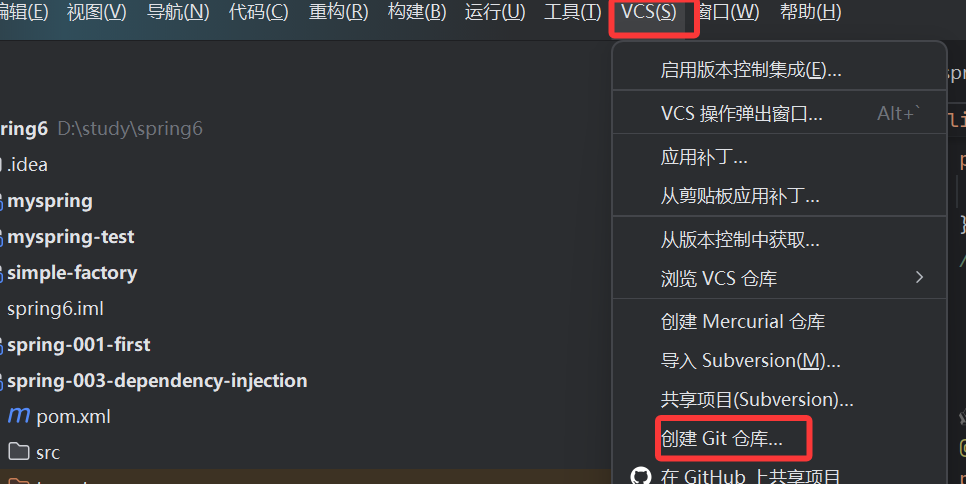

食分速递项目
一 环境搭建

1.前端环境搭建
前端工程基于 nginx 运行
启动nginx
在nginx安装的文件夹内，双击 nginx.exe 即可启动 nginx 服务，访问端口号为 80
什么是nginx？
nginx 反向代理，就是将前端发送的动态请求由 nginx 转发到后端服务器
- 位置：运行在你的服务器上。
- 职责：接收、调度、分发请求。它是请求到达服务器后遇到的第一个“门卫”和“调度员”。它不处理核心业务逻辑（比如计算订单金额），但它决定把这个请求交给谁去处理，或者直接自己处理（比如直接返回一个图片文件）。
nginx 反向代理的好处
•提高访问速度
•进行负载均衡
•保证后端服务安全
所谓负载均衡,就是把大量的请求按照我们指定的方式均衡的分配给集群中的每台服务器
nginx 反向代理的配置方式
server{ |
**listen 80;**监听80端口
逐行详解
server { |
- 定义一个虚拟服务器：Nginx 可以同时托管多个网站（虚拟主机），每个
server {}块就是一个网站的配置。
listen 80; |
- 监听端口：这个虚拟服务器会监听来自 80 端口 的 HTTP 请求（80 是 HTTP 协议的默认端口）。
server_name localhost; |
- 服务器名称：这个虚拟服务器对应的域名是
localhost。当你在浏览器里访问http://localhost时，就会由这个 server 块来处理。
location /api/ { |
- 位置块：这是最核心的配置。它定义了一个 URL 路径匹配规则。所有以
/api/开头的请求（例如http://localhost/api/employee/login），都会进入这个location块内的逻辑。
proxy_pass http://localhost:8080/admin/; |
- 反向代理指令：这是实现转发的关键命令。
- 它告诉 Nginx，对于匹配到的请求，不要自己处理，而是将其 转发（代理） 到指定的地址。
http://localhost:8080/admin/是 目标地址。

nginx 负载均衡的配置方式
upstream webservers{ |
1. upstream 块 - 定义服务器池（后端集群）
upstream webservers { |
upstream webservers {}：定义一个名为webservers的上游服务器组（也叫集群或服务器池）。server 192.168.100.128:8080;：在池中添加第一台后端服务器，IP 是192.168.100.128，端口是8080。server 192.168.100.129:8080;：在池中添加第二台后端服务器，IP 是192.168.100.129，端口是8080。
Nginx 默认的负载均衡策略是轮询，也就是说，第一个请求发给 128，第二个请求发给 129，第三个又发给 128，以此类推。
2. location 块 - 流量分发
location /api/ { |
- 关键变化在这里：
proxy_pass的目标不再是单一的服务器地址，而是指向了我们定义的 upstream 池http://webservers。 - 这意味着，所有匹配到的请求都会被分发到
webservers池中的服务器上。

2.后端环境搭建
项目结构
后端工程基于 maven 进行项目构建，并且进行分模块开发


sky-common 子模块中存放的是一些公共类，可以供其他模块使用
sky-pojo 子模块中存放的是一些 entity、DTO、VO
sky-server 子模块中存放的是 配置文件、配置类、拦截器、controller、service、mapper、启动类等
使用Git进行版本控制
.gitingore文件是git的相关文件，目的是忽略推送到服务器的文件或文件夹

还没有被git版本控制的项目可以在idea配置，具体操作是上方操作菜单点击VSC，点击创建git仓库，最后在弹出窗中选择项目
之后就可以测试提交，注意第一次提交会提交到本地仓库
推送就是要推送到远程仓库，第一次会提示你配置远程仓库信息
核心概念总结
| 动作 | 作用域 | 描述 | 影响 | 类比 |
|---|---|---|---|---|
commit |
本地 | 将暂存区的快照永久记录到本地仓库的历史中。 | 只更新你自己电脑上的 Git 仓库。团队其他成员看不到你的这次提交。 | 保存到本地硬盘 |
push |
本地 → 远程 | 将本地仓库中的新提交记录上传到远程仓库（如 GitHub, Gitee）。 | 更新共享的远程仓库，团队其他成员可以通过 pull 获取你的更新。 |
上传到网盘/服务器 |
工作流程图示
一个标准的 Git 协作流程如下：
你的电脑工作区 –(git add)–> 暂存区 –(git commit)–> 本地仓库 –(git push)–> 远程仓库
同事的电脑拉远程仓库代码
远程仓库 –(git fetch)–> 本地仓库 –(git checkout)–> 工作区
- 合并（Merge）：“邀请别人的成果加入我的版本”
- 操作：我站在原地不动，把别人完成的新内容拉过来，和我当前的内容融合在一起。如果内容有重叠（冲突），我需要手动调解。
- 结果：历史记录会留下一次“合并”的痕迹，标明两条线在这里汇合了。
- 变基（Rebase）：“把我的工作挪到最新的成果之上”
- 操作：我先把我的工作暂时放到一边，然后把别人的新成果作为新的基础，最后我再把我的工作重新实施在这个崭新的、最新的基础之上。
- 结果：历史记录看起来就像是我从一开始就是在最新的代码基础上进行工作的，一条直线，非常整洁。
比喻
合并：你正在拼A部分，同事拼好了B部分。你直接把同事拼好的B部分拿过来，和你的A部分对接在一起。如果对接不上（冲突），你就需要调整一下接口。
变基：你发现同事不仅拼好了B部分，还把你们共同的底座C也升级了。于是，你先把你的A部分拆下来，把升级后的新底座C换上去，然后再把你的A部分重新拼到新底座C上。
3.swagger接口文档
Knife4j使用方式
Knife4j 是为Java MVC框架集成Swagger生成Api文档的增强解决方案
<dependency> |
WebMvcConfiguration文件配置
1.在配置类中加入 knife4j 相关配置
2.设置静态资源映射，否则接口文档页面无法访问
/** |
常用注解
| 注解 | 说明 |
|---|---|
| @Api | 用在类上，例如Controller，表示对类的说明 |
| @ApiModel | 用在类上，例如entity、DTO、VO |
| @ApiModelProperty | 用在属性上，描述属性信息 |
| @ApiOperation | 用在方法上，例如Controller的方法，说明方法的用途、作用 |